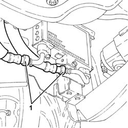
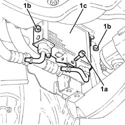

4130B98 Power assisted steering fluid cooling RADIATOR - R.R.
- Path
- Procedures > 41 STEERING > 4130 POWER ASSISTED STEERING > 4130B power steering hydraulic sytem > 4130B98 Power assisted steering fluid cooling RADIATOR - R.R.
- Kind
- repair procedure (removal / refitting; the operation number is the code)
- Applies to
- engines: 3.2 V6; all production periods
- Interactive page
- https://sloeber94.github.io/elrnDB-a156/en/#/3238155
Applies to: engines: 3.2 V6; all production periods
 Removing
Removing
 Refitting
RefittingPosition the vehicle on the ramp
Proceed with removal 7055B54 under-engine guard - r r .
1. Disconnect the rapid connectors for the inlet and outlet pipes from the power assisted steering fluid cooling radiator.

Applies to: engines: 3.2 V6; all production periods
1. Undo the bolt (1a) and the nuts (1b) and remove the power assisted steering fluid cooling radiator (1c).

Applies to: engines: 3.2 V6; all production periods
Refitting
RemovingPlace the power assisted steering fluid radiator in its housing and secure it using the nuts and the bolt.
Connect the rapid connectors for the inlet and outlet pipes to the power assisted steering fluid radiator.
Proceed with refitting 7055B54 under-engine guard - r r .
Fill the power steering circuit with the recommended fluid.
 | Type | Component | Name | Qty. |
|---|---|---|---|---|
- | Fluid [l] | HYDRAULIC POWER ASSISTED STEERING SYSTEM | TUTELA GI/A | 1.2 |
Bleed the power steering system as described below
With the front wheels raised off the ground, with the engine switched off turn the steering wheel to full lock, left and right, 4-5 times.
Check and, if necessary, top up the fluid level in the reservoir.
Remove the car from the ramps.
Start the engine and carry out 4 - 5 full steering wheel turn cycles (right and left).
Top up the fluid level in the reservoir.